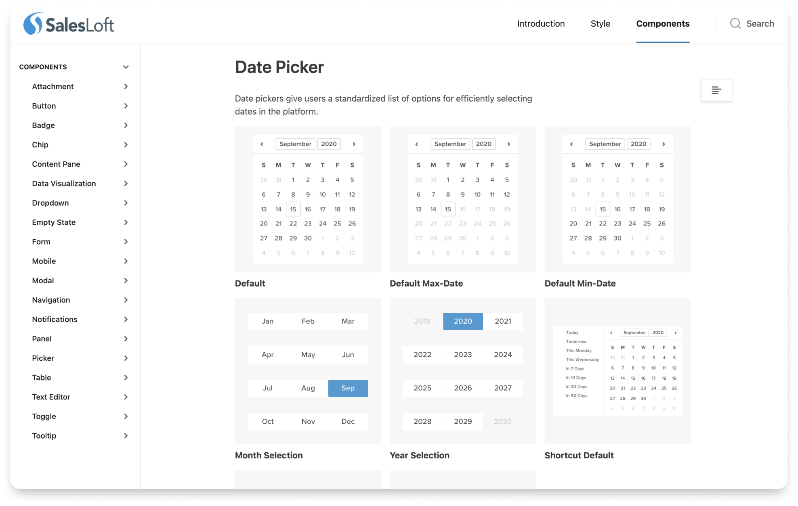

Rhythm Design System
Creating the SalesLoft Design System from the Ground Up
View Project
Analytics Design Framework
Directing the Design of SalesLoft Analytics
View Project
Inclusivv Analytics Dashboard
From Design Sprint to Production for Customer Admin Analytics
View Project